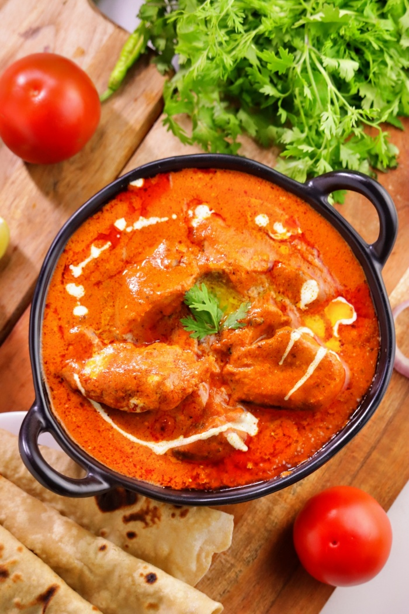

HOME/ NONVEG BIRYANIS/HYDERABADI CHICKEN DUM BIRYANI|HOW TO MAKE HYDERABADI CHICKEN DUM BIRYANI
Butter Chicken Recipe | Murgh Makhani | How to make Chicken Makhani
Butter Chicken Recipe | Murgh Makhani | How to make Chicken Makhani-Butter Chicken Recipe |
Murgh Makhani | How to make Chicken Makhani

Butter Chicken can be made with the same taste even without a Tandoor. Here is a detailed recipe with images and
a video.
The very mention of Butter Chicken makes people's mouths water and here is the best recipe which does not
compromise on any aspect of making the Best Butter Chicken. I can bet that my recipe tastes much better
than
Chicken made restaurant style because these days they don't make the original Butter Chicken in the
traditional
way anymore. They simply take a grilled Chicken or grill the Chicken in the Tandoor and add the Butter
Chicken
gravy. They fry it on a high flame and just add Butter on the top. If cooked in this method the Chicken
will not
absorb the flavours.
In this recipe, the Chicken has to be grilled in the Tandoor only. Only then will the Butter Chicken have a smoky
flavour and a special taste. The Chicken can be grilled even in an oven in the grill mode but if you make
it in
the Tandoor, the grilled Chicken does not have a smoky flavour. I am making it in a pan but I am not
tampering
with the original traditional method but still presenting the best recipe.
Please follow the tips and the steps i have suggested and enjoy the best Butter Chicken.
Tips
Chicken:
Any boned Chicken can be used for Butter Chicken. I have used Boneless Chicken
If the Chicken is coated with all the spices and refrigerated overnight then the Chicken gets marinated
nicely and will absorb all the flavours. Marinated Chicken also should be kept in the fridge for at
least 4 hours
Grill:
In the conventional method for the Butter Chicken, boned Chicken is grilled in the Tandoor. You could
use
boneless Chicken if you like. Chicken
I have used a grill pan to grill the Chicken. Even on the grill pan, the Chicken should be put on the
grill
and not touched for 5 minutes. When left untouched it gets grilled nicely on one side. Then turn it
over and
grill it on a low flame to 80 %. Boneless Chicken takes time to grill so it should be grilled on a low
flame. Eighty per cent means cooking the Chicken till you poke a fork into the Chicken to see if it is going
in easily. After grilling, if Chicken is cut into pieces there should be some Water left. If you grill
it
till all the water evaporates, then the pieces will become too hard. And the Chicken will not absorb
any
flavours.
Those who grill in the oven should grill for 20 minutes at 220 degrees. That is enough.
Butter:
As a matter of fact, Butter Chicken is a high calorie recipe but if you want to occasionally taste a great
recipe, you just have to put this much of Butter. Only then it is tasty.
Honey:
In the traditional Butter Chicken recipe, they add a little bit of Honey at the very end to balance the
flavours. In case you do not have Honey on hand, you could use Sugar but Honey does give a special
flavour!!!
For a smoky flavour:
To get a smoky flavour i have used burnt coconut shell in a cup and put the cup in the middle of the curry I
sprinkle some Ghee and Garam Masala and kept it for 3minutes then remove from the fire If done like this the
traditional Butter Chicken gets the smoky flavour if you have coal you could use school as well or give a
smoky flavour With a smoke gun machine
Finally:
I have used heritage brand premium fresh Curd so i could use it directly but If you plan to use regular kurt
put it in a cloth Tight and leave it in the refrigerator for 2 to 3 hours then the water from the Curd is
removed and the Kurt looks like panel
Butter Chicken is not spicy and strong like the usual masala Chicken curry it has more flavours less
mitchell and the nice savory taste of Butter
Butter Chicken Recipe | Murgh Makhani | How to make Chicken Makhani
INGREDIENTS
To marinate Chicken
350 gms Boneless Chicken
1 tbsp Ginger Garlic Paste
1/2 Slice Lemon Juice
Salt – a little
2 tbsp Mustard Oil
1/4 tsp Black Salt
1/2 tsp Roasted Cumin Powder
1/2 tsp Mirchi Powder
1 tsp Kashmiri Mirchi Powde
2 tsp Coriander Powder
1/2 tsp Dry Fenugreek Leaves
4 tbsp Fresh Curd
1/2 tsp Cardamom Powder
tsp Amchur Powder
For Gravy
4 Tomato (250 gms)
1 Cinnamon
2 Cardamoms
2 Cloves
Biryani Leaf – half
1/2 Inch Ginger
5 Garlic
Salt
1/4 tsp Sugar
15 Cashew Nuts
1/2 cup Onion Chopped
3 tbsp Heritage Butter
4 Kashmiri Chillies
1/2 tsp Pepper
250 ml Water
To Grill the Chicken
1 tbsp Oil
1 tsp Butter
For Chicken Curry
1 tbsp Oil
3 tsp Butter
1 tsp Kashmiri Mirchi Powder
1 tsp Mirchi Powder
1/2 tsp Roasted Cumin Powder
400 ml Water
Salt
1 tsp Dry Fenugreek Leaves
2 tsp Butter
3 tbsp Fresh Cream
1 tbsp Honey
Burnt Coconut shells/Coals
2 Pinches Garam Masala
3 Ghee Drops
INSTRUCTIONS
Make 1/4th inch wide cuts in the Chicken breast to a depth of 80%. Stuff Ginger Garlic Paste, Lemon
Juice, and Salt into the cuts, rub well, and set aside.
In a vessel, take Mustard Oil and add Kashmiri Mirchi Powder and mix well. And add the Heritage Premium
Curd or Hung Curd and the rest of the ingredients and mix well.
Then add the spice-coated Chicken and rub well and let it marinate for four hours or overnight in the
refrigerator.
.jpg)
.jpg)